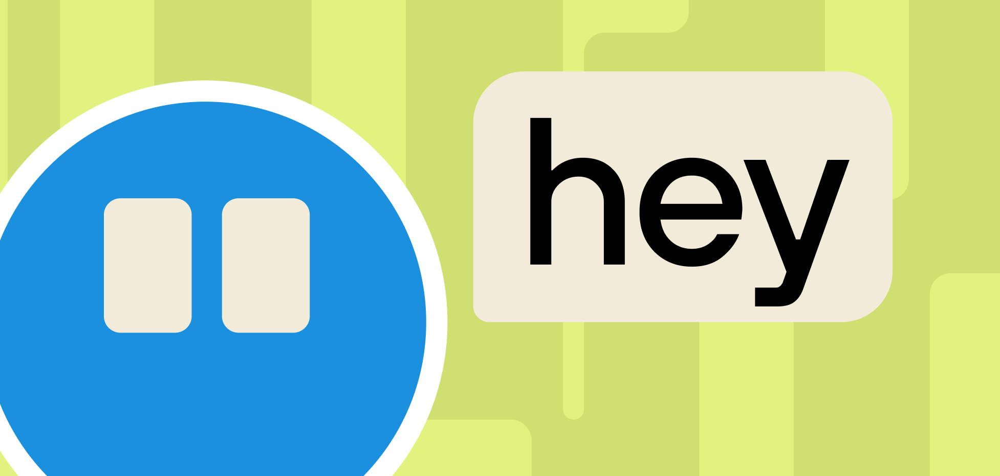

ИИ-продукты всё чаще обретают голос — буквальный и метафорический. То, как система говорит, напрямую влияет на то, как её воспринимают. Тон, стиль и характер ответов формируют образ продукта не хуже визуального дизайна. Пользователь начинает воспринимать систему не как инструмент, а как собеседника с определённым характером.
Почему голос стал частью дизайна
В классических продуктах текст в интерфейсе был функциональным: подписи к кнопкам, сообщения об ошибках, инструкции. В диалоговых ИИ-системах текст становится основным каналом взаимодействия. Каждый ответ — это не просто информация, но и способ выстроить отношения с пользователем.
Голос системы формирует:
- ощущение компетентности и надёжности,
- степень формальности или близости,
- уровень уверенности в ответах,
- восприятие ошибок и ограничений.

Тон как инструмент доверия
Слишком формальный тон создаёт дистанцию. Слишком разговорный — снижает ощущение профессионализма. Правильный баланс зависит от контекста продукта и его аудитории.
Медицинский ассистент и творческий редактор должны говорить по-разному — не только потому что это уместно, но и потому что это влияет на то, насколько пользователь доверяет результату. Голос системы должен соответствовать ожиданиям от экспертизы в конкретной области.
Последовательность как часть характера
Один из главных рисков — непоследовательность. Если система в одних ответах звучит сухо и технично, а в других — эмоционально и неформально, пользователь теряет ощущение целостности продукта.
Характер системы должен быть стабильным: одинаково проявляться в простых и сложных запросах, в успешных и ошибочных сценариях, в коротких и развёрнутых ответах.
Граница между характером и манипуляцией
Голос системы — мощный инструмент, который легко использовать неэтично. Чрезмерная приятность, навязчивое одобрение или искусственная эмпатия могут снизить критичность пользователя и создать ложное ощущение близости. Задача дизайна — найти голос, который располагает, но не манипулирует. Который помогает, но не заменяет живое общение.